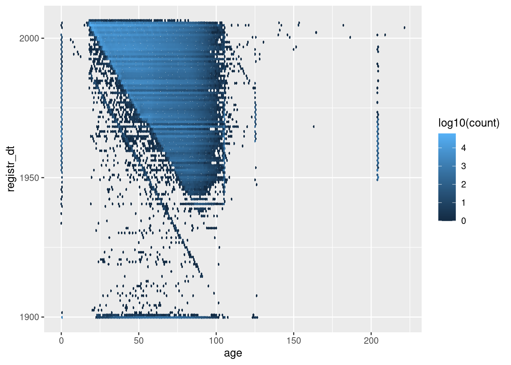

[meta] Check administrative variables
m_01_5_check_admin
Ross Gayler
2021-05-15
Last updated: 2021-05-27
Checks: 7 0
Knit directory:
fa_sim_cal/
This reproducible R Markdown analysis was created with workflowr (version 1.6.2). The Checks tab describes the reproducibility checks that were applied when the results were created. The Past versions tab lists the development history.
Great! Since the R Markdown file has been committed to the Git repository, you know the exact version of the code that produced these results.
Great job! The global environment was empty. Objects defined in the global environment can affect the analysis in your R Markdown file in unknown ways. For reproduciblity it’s best to always run the code in an empty environment.
The command set.seed(20201104) was run prior to running the code in the R Markdown file.
Setting a seed ensures that any results that rely on randomness, e.g.
subsampling or permutations, are reproducible.
Great job! Recording the operating system, R version, and package versions is critical for reproducibility.
Nice! There were no cached chunks for this analysis, so you can be confident that you successfully produced the results during this run.
Great job! Using relative paths to the files within your workflowr project makes it easier to run your code on other machines.
Great! You are using Git for version control. Tracking code development and connecting the code version to the results is critical for reproducibility.
The results in this page were generated with repository version a6fb2e3. See the Past versions tab to see a history of the changes made to the R Markdown and HTML files.
Note that you need to be careful to ensure that all relevant files for the
analysis have been committed to Git prior to generating the results (you can
use wflow_publish or wflow_git_commit). workflowr only
checks the R Markdown file, but you know if there are other scripts or data
files that it depends on. Below is the status of the Git repository when the
results were generated:
Ignored files:
Ignored: .Rhistory
Ignored: .Rproj.user/
Ignored: .tresorit/
Ignored: _targets/
Ignored: data/VR_20051125.txt.xz
Ignored: data/VR_Snapshot_20081104.txt.xz
Ignored: renv/library/
Ignored: renv/local/
Ignored: renv/staging/
Note that any generated files, e.g. HTML, png, CSS, etc., are not included in this status report because it is ok for generated content to have uncommitted changes.
These are the previous versions of the repository in which changes were made
to the R Markdown (analysis/m_01_5_check_admin.Rmd) and HTML (docs/m_01_5_check_admin.html)
files. If you’ve configured a remote Git repository (see
?wflow_git_remote), click on the hyperlinks in the table below to
view the files as they were in that past version.
| File | Version | Author | Date | Message |
|---|---|---|---|---|
| html | ab90fe6 | Ross Gayler | 2021-05-18 | WIP |
| Rmd | 1499235 | Ross Gayler | 2021-05-16 | WIP |
| Rmd | 24d95c0 | Ross Gayler | 2021-05-15 | WIP |
| html | 24d95c0 | Ross Gayler | 2021-05-15 | WIP |
| Rmd | d7b5c39 | Ross Gayler | 2021-05-15 | WIP |
| Rmd | 411de1e | Ross Gayler | 2021-04-04 | WIP |
| html | 411de1e | Ross Gayler | 2021-04-04 | WIP |
| Rmd | 0bd4a5f | Ross Gayler | 2021-04-03 | WIP |
| Rmd | ec5d588 | Ross Gayler | 2021-03-30 | WIP |
| html | ec5d588 | Ross Gayler | 2021-03-30 | WIP |
# NOTE this notebook can be run manually or automatically by {targets}
# So load the packages required by this notebook here
# rather than relying on _targets.R to load them.
# Set up the project environment, because {workflowr} knits each Rmd file
# in a new R session, and doesn't execute the project .Rprofile
library(targets) # access data from the targets cache
library(tictoc) # capture execution time
library(here) # construct file paths relative to project roothere() starts at /home/ross/RG/projects/academic/entity_resolution/fa_sim_cal_TOP/fa_sim_callibrary(fs) # file system operations
library(dplyr) # data wrangling
Attaching package: 'dplyr'The following objects are masked from 'package:stats':
filter, lagThe following objects are masked from 'package:base':
intersect, setdiff, setequal, unionlibrary(gt) # table formatting
library(stringr) # string matching
library(vroom) # fast reading of delimited text files
library(lubridate) # date parsing
Attaching package: 'lubridate'The following objects are masked from 'package:base':
date, intersect, setdiff, unionlibrary(forcats) # manipulation of factors
library(ggplot2) # graphics
# start the execution time clock
tictoc::tic("Computation time (excl. render)")
# Get the path to the raw entity data file
# This is a target managed by {targets}
f_entity_raw_tsv <- tar_read(c_raw_entity_data_file)1 Introduction
These meta notebooks document the development of functions that will be applied in the core pipeline.
The aim of the m_01 set of meta notebooks is to work out how to read the
raw entity data, drop excluded cases, discard irrelevant variables,
apply any cleaning, and construct standardised names. This does not
include construction of any modelling features. To be clear, the target
(c_raw_entity_data) corresponding to the objective of this set of
notebooks is the cleaned and standardised raw data, before constructing
any modelling features.
This notebook documents the checking the “administrative” variables for any issues that need fixing.
The subsequent notebooks in this set will develop the other functions needed to generate the cleaned and standardised data.
Regardless of whether there are any issues that need to be fixed, the analyses here may inform our use of these variables in later analyses.
We don’t know any of the details on how the NCVR data is collected and processed, so our interpretations are only educated guesses. We have no intention of using the administrative variables as predictors for entity resolution. However, it’s possible that they may shed some light on data quality which might influence our choice of the records to be used for modelling.
Define the “administrative” variables:
county_id- County identification numbercounty_desc- County descriptionvoter_reg_num- Voter registration number (unique by county)registr_dt- Voter registration datecancellation_dt- Cancellation date
vars_admin <- c("county_id", "county_desc", "voter_reg_num", "registr_dt", "cancellation_dt") 2 Read entity data
Read the raw entity data file using the previously defined core pipeline
functions raw_entity_data_read(), raw_entity_data_excl_status(),
raw_entity_data_excl_test(), raw_entity_data_drop_novar(), and
raw_entity_data_parse_dates().
# Show the data file name
fs::path_file(f_entity_raw_tsv)[1] "VR_20051125.txt.xz"d <- raw_entity_data_read(f_entity_raw_tsv) %>%
raw_entity_data_excl_status() %>%
raw_entity_data_excl_test() %>%
raw_entity_data_drop_novar() %>%
raw_entity_data_parse_dates()
dim(d)[1] 4099699 253 county_id & county_desc
county_id - County identification number
county_desc - County description
Look at a sample of values.
d %>%
dplyr::select(starts_with("county_")) %>%
dplyr::slice_sample(n = 10) %>%
gt::gt() %>%
gt::opt_row_striping() %>%
gt::tab_style(style = gt::cell_text(weight = "bold"), locations = gt::cells_column_labels()) %>%
gt::fmt_missing(columns = everything(), missing_text = "<NA>")| county_id | county_desc |
|---|---|
| 82 | SAMPSON |
| 35 | FRANKLIN |
| 26 | CUMBERLAND |
| 65 | NEW HANOVER |
| 26 | CUMBERLAND |
| 19 | CHATHAM |
| 33 | EDGECOMBE |
| 60 | MECKLENBURG |
| 57 | MADISON |
| 78 | ROBESON |
Look at county_id, a numeric code indicating a geographical area.
# number of unique values
d$county_id %>% unique() %>% length()[1] 100# summary of distribution of county ID interpreted as a number
d$county_id %>% as.integer() %>% summary() Min. 1st Qu. Median Mean 3rd Qu. Max.
1.00 32.00 53.00 52.26 76.00 100.00 # number of records per county
d %>%
dplyr::count(county_id) %>%
dplyr::arrange(desc(n)) %>%
gt::gt() %>%
gt::opt_row_striping() %>%
gt::tab_style(style = cell_text(weight = "bold"), locations = cells_column_labels()) %>%
gt::fmt_missing(columns = everything(), missing_text = "<NA>") %>%
gt::fmt_number(columns = n, decimals = 0)| county_id | n |
|---|---|
| 60 | 410,483 |
| 92 | 367,146 |
| 41 | 216,993 |
| 34 | 175,097 |
| 32 | 138,594 |
| 26 | 125,885 |
| 11 | 104,267 |
| 18 | 79,576 |
| 65 | 79,484 |
| 1 | 73,306 |
| 90 | 72,265 |
| 49 | 71,218 |
| 74 | 71,178 |
| 13 | 70,738 |
| 76 | 68,828 |
| 36 | 65,685 |
| 68 | 59,435 |
| 29 | 57,337 |
| 51 | 56,868 |
| 96 | 55,699 |
| 45 | 53,679 |
| 10 | 53,463 |
| 80 | 53,187 |
| 23 | 52,398 |
| 79 | 51,491 |
| 78 | 46,871 |
| 64 | 45,537 |
| 67 | 45,043 |
| 14 | 44,381 |
| 43 | 43,012 |
| 63 | 41,542 |
| 25 | 38,552 |
| 86 | 38,069 |
| 12 | 35,567 |
| 97 | 34,655 |
| 84 | 33,407 |
| 55 | 33,012 |
| 19 | 32,989 |
| 81 | 32,070 |
| 95 | 31,233 |
| 98 | 30,033 |
| 16 | 29,122 |
| 35 | 28,263 |
| 44 | 26,534 |
| 33 | 26,494 |
| 71 | 24,078 |
| 31 | 23,944 |
| 82 | 22,487 |
| 53 | 22,278 |
| 2 | 21,143 |
| 28 | 21,121 |
| 24 | 20,663 |
| 56 | 20,497 |
| 70 | 20,400 |
| 50 | 20,151 |
| 54 | 20,083 |
| 85 | 20,027 |
| 59 | 19,581 |
| 39 | 18,650 |
| 77 | 18,084 |
| 7 | 17,568 |
| 42 | 17,029 |
| 83 | 15,589 |
| 30 | 15,489 |
| 58 | 15,348 |
| 88 | 14,342 |
| 47 | 14,111 |
| 73 | 13,915 |
| 9 | 13,784 |
| 62 | 13,653 |
| 57 | 13,246 |
| 4 | 13,168 |
| 66 | 12,539 |
| 20 | 12,510 |
| 100 | 12,380 |
| 91 | 12,357 |
| 99 | 11,410 |
| 87 | 11,069 |
| 8 | 10,210 |
| 46 | 9,751 |
| 17 | 9,133 |
| 27 | 8,088 |
| 94 | 7,758 |
| 21 | 7,680 |
| 5 | 7,173 |
| 6 | 6,961 |
| 93 | 6,907 |
| 37 | 6,698 |
| 69 | 6,660 |
| 22 | 6,536 |
| 52 | 6,220 |
| 61 | 6,219 |
| 40 | 6,004 |
| 38 | 5,563 |
| 3 | 4,918 |
| 72 | 4,603 |
| 15 | 3,705 |
| 75 | 2,774 |
| 48 | 1,731 |
| 89 | 1,027 |
# plot the number of records per county
ggplot(d) +
geom_bar(aes(x = forcats::fct_infreq(county_id))) +
theme(panel.grid.major = element_blank(),
axis.text.x = element_text(angle = 90, hjust=1, vjust = 0.5)
)
| Version | Author | Date |
|---|---|---|
| 24d95c0 | Ross Gayler | 2021-05-15 |
- Never missing
- Integer 1 .. 100 (as strings)
- A small number of populous counties with a long tail of small counties
county_desc appears to be a text label corresponding to county_desc.
Check that the county descriptions are in a 1:1 relationship with the
county IDs.
# number of unique values
d$county_desc %>% unique() %>% length()[1] 100# number of unique values of code:label combinations
paste(d$county_id, d$county_desc) %>% unique() %>% length()[1] 100# Is code:label a 1:1 relationship?
# Is the number of unique labels equal to the number of unique code:label combinations
(d$county_desc %>% unique() %>% length()) ==
(paste(d$county_id, d$county_desc) %>% unique() %>% length())[1] TRUE- 100 unique values
county_descin 1:1 relationship withcounty_id
They look reasonable, to the extent that I can tell without knowing anything about the counties.
Because the variables are in a 1:1 relationship we don’t need both of
them. I will drop the numeric county_id because knowing the county
name may be helpful when manually checking records against online
sources.
4 voter_reg_num
voter_reg_num - Voter registration number (unique by county)
# Show some examples from the beginning of the file
d %>%
dplyr::select(voter_reg_num) %>%
dplyr::slice_head(n = 10) %>%
gt::gt() %>%
gt::opt_row_striping() %>%
gt::tab_style(style = gt::cell_text(weight = "bold"), locations = gt::cells_column_labels()) %>%
gt::fmt_missing(columns = everything(), missing_text = "<NA>")| voter_reg_num |
|---|
| 000000000001 |
| 000000000001 |
| 000000000001 |
| 000000000001 |
| 000000000001 |
| 000000000001 |
| 000000000001 |
| 000000000001 |
| 000000000001 |
| 000000000001 |
# Show some examples from the end of the file
d %>%
dplyr::select(voter_reg_num) %>%
dplyr::slice_tail(n = 10) %>%
gt::gt() %>%
gt::opt_row_striping() %>%
gt::tab_style(style = gt::cell_text(weight = "bold"), locations = gt::cells_column_labels()) %>%
gt::fmt_missing(columns = everything(), missing_text = "<NA>")| voter_reg_num |
|---|
| 000099848833 |
| 000099848834 |
| 000099848835 |
| 000099848836 |
| 000099848837 |
| 000099848838 |
| 000099848840 |
| 000099848841 |
| 000099870963 |
| 000401437666 |
# number of unique values
d$voter_reg_num %>% unique() %>% length()[1] 1786064# summary of distribution of voter registration number interpreted as a number
d$voter_reg_num %>% as.integer() %>% summary() Min. 1st Qu. Median Mean 3rd Qu. Max.
1 44722 223167 6670211 7629018 401437666 ~1.8M unique values
- Much less than the number of rows, so the numbers are reused
Never missing
Integer 1 .. ~401M (as strings)
12-digit integers with leading zeroes
Check whether county_id \(\times\) voter_reg_num is unique, as
claimed.
# number of records
nrow(d)[1] 4099699# number of unique county_id x voter_reg_num combinations
paste(d$county_id, d$voter_reg_num) %>% unique() %>% length()[1] 4099699# Are the county_id x voter_reg_num combinations unique?
# Number of unique county_id x voter_reg_num combinations equals the number of rows?
nrow(d) ==
(paste(d$county_id, d$voter_reg_num) %>% unique() %>% length())[1] TRUEcounty_id\(\times\)voter_reg_numis unique, as claimed
5 registr_dt
registr_dt - Voter registration date
# summary of distribution of registration date interpreted as a date
d$registr_dt %>% summary() Min. 1st Qu. Median Mean 3rd Qu. Max.
"1899-09-14" "1988-01-01" "1997-01-09" "1993-01-18" "2002-11-05" "9999-10-21" # Get records apparently registered after the snapshot was taken (2005-11-25)
# The snapshot date is taken from earlier analyses before it was dropped
x <- d %>%
dplyr::filter(registr_dt > lubridate::ymd("2005-11-25")) # after snapshot date
# Number of records apparently registered after the snapshot was taken
nrow(x)[1] 18# Show records apparently registered after the snapshot was taken
x %>%
dplyr::select(
registr_dt, county_desc, voter_reg_num, last_name, first_name,
street_name, street_type_cd, res_city_desc, age
) %>%
dplyr::arrange(county_desc, voter_reg_num) %>%
gt::gt() %>%
gt::opt_row_striping() %>%
gt::tab_style(style = cell_text(weight = "bold"), locations = cells_column_labels()) %>%
gt::fmt_missing(columns = everything(), missing_text = "<NA>")| registr_dt | county_desc | voter_reg_num | last_name | first_name | street_name | street_type_cd | res_city_desc | age |
|---|---|---|---|---|---|---|---|---|
| 9999-10-21 | ALAMANCE | 000009066908 | WOOTEN | HEATHER | CAROLINA | CIR | GRAHAM | 24 |
| 8480-10-09 | CALDWELL | 000014470774 | PHILLIPS | STEVEN | BENFIELD | DR | HUDSON | 52 |
| 2201-11-28 | CASWELL | 000000021711 | WHARTON | REGINA | 7TH | ST | YANCEYVILLE | 25 |
| 2022-09-04 | CHOWAN | 000000014190 | MEADS | LEONARD | MACEDONIA | RD | EDENTON | 34 |
| 2008-10-05 | GASTON | 000007600410 | HAMRICK | JIMMY | RALPHS | BLVD | GASTONIA | 35 |
| 2008-10-11 | GASTON | 000007600617 | HUNSUCKER | JESSICA | ROLLINGWOOD | DR | STANLEY | 23 |
| 2008-10-05 | GASTON | 000007600823 | MARTIN | JASON | PAMELA | ST | GASTONIA | 30 |
| 2007-10-12 | GASTON | 000007601045 | MOORE | GEORGE | UPPER SPENCER MOUNTAIN | RD | STANLEY | 56 |
| 2201-06-12 | MACON | 000000034702 | MCGEE | MACK | MASHBURN BRANCH | RD | FRANKLIN | 72 |
| 5113-08-07 | NASH | 000000068243 | SCHULTE | MATTHEW | SUNSET | AVE | ROCKY MOUNT | 22 |
| 2801-11-01 | ORANGE | 000000196807 | GAUDIO | LAUREN | HILLSBOROUGH | ST | CHAPEL HILL | 24 |
| 7614-03-05 | PAMLICO | 000006450688 | MILLER | ANITA | FLORENCE | ST | NEW BERN | 22 |
| 2201-09-18 | ROCKINGHAM | 000000102698 | HAIZLIP | JAMES | NC 87 | <NA> | EDEN | 39 |
| 2007-08-15 | SURRY | 000030004622 | ALLEN | SEAN | KENSINGTON | DR | MOUNT AIRY | 23 |
| 9482-03-11 | SWAIN | 000000001209 | DEHART | DEBORAH | SHEPHERDS CREEK | RD | BRYSON CITY | 42 |
| 2011-06-11 | WILSON | 000057476091 | SMITH | FLOYD | FARMWOOD | LOOP | WILSON | 80 |
| 3663-06-25 | WILSON | 000057476124 | RENFROW | TERRI | OLD RALEIGH | RD | WILSON | 24 |
| 3001-09-25 | WILSON | 000057476878 | MCGLAUGHON | REBECCA | BLOOMERY | RD | WILSON | 26 |
Never missing
18 records have registration date after the snapshot date
- Range from a couple of years to millennia in the future
- Presumably these are typos
Some records have very early registration dates
There is nothing obviously odd about the cases with registration date after the snapshot date. The problem is proibabably just in the registration date.
Investigate the early registration dates.
First form a view on how early is too early by finding the maximum age and assuming registration at 21 years of age.
# summary of distribution of age interpreted as an integer
d$age %>% as.integer() %>% summary() Min. 1st Qu. Median Mean 3rd Qu. Max.
0.00 33.00 45.00 46.93 58.00 221.00 # get some extreme quantiles of the age distribution
d$age %>% as.integer() %>% quantile(probs = c(0.003, 0.004, 0.995, 0.996, 0.997, 0.998, 0.999)) 0.3% 0.4% 99.5% 99.6% 99.7% 99.8% 99.9%
0 18 98 105 105 105 204 # plot the distribution of age <= 21
d %>%
dplyr::mutate(age = as.integer(age)) %>%
dplyr::filter(age <= 21) %>%
ggplot() +
geom_vline(xintercept = 18, colour = "red") +
geom_histogram(aes(x = age), binwidth = 1) +
scale_y_log10()Warning: Transformation introduced infinite values in continuous y-axisWarning: Removed 8 rows containing missing values (geom_bar).
# plot the distribution of age >= 80
d %>%
dplyr::mutate(age = as.integer(age)) %>%
dplyr::filter(age >= 80) %>%
ggplot() +
geom_vline(xintercept = c(105, 125, 204), colour = "red") +
geom_histogram(aes(x = age), binwidth = 1) +
scale_y_log10()Warning: Transformation introduced infinite values in continuous y-axisWarning: Removed 79 rows containing missing values (geom_bar).
| Version | Author | Date |
|---|---|---|
| 24d95c0 | Ross Gayler | 2021-05-15 |
Age 18 seems to be the generally youngest age, but some are registered at 17, which seems plausible.
The only younger people have an age of 0 or 8 years. These are obviously wrong.
The distribution of ages 80+ opened a can of worms. There are obviously some issues with
age. I will deal with that in detail in a later notebook.
Without considering age in detail, it appears that the maximum
accurate age is not more than 120 years.
Assume that the maximum possible voter age is 116 years. The minimum registration age in North Carolina is 16 years (although I have no idea what it was 100 years ago). Therefore, assume that the oldest possible voter could have registered 100 years prior to the snapshot date. That is, regard any registration earlier than 1905-11-25 as very unlikely to be correct.
Now look at the distribution of registration dates that are no later than the snapshot date.
d %>%
dplyr::filter(registr_dt <= lubridate::ymd("2005-11-25")) %>%
ggplot() +
geom_vline(xintercept = c(lubridate::ymd("1905-11-25"), lubridate::ymd("1935-11-25")),
colour = "red") +
geom_histogram(aes(x = registr_dt), binwidth = 365.25) + # 1yr bins
scale_y_sqrt()
There is a large spike of registrations in 1900. These are bound to be errors. (1900 is a common default value for year.)
Registration dates before ~1935 are suspect (because the distribution of probably accurate dates appears to run out around
Look at the relationship between age and registration date. The vast majority of these records will be OK, so spreading the observations over two dimensions may make it easier to spot anomalous regions.
First look at all the records (excluding those with registration date after the snapshot date).
d %>%
dplyr::mutate(age = as.integer(age)) %>%
dplyr::filter(registr_dt <= lubridate::ymd("2005-11-25")) %>%
ggplot() +
geom_hex(aes(x = age, y = registr_dt, fill = stat(log10(count))), binwidth = c(1, 365.25)) # 1yr bins x&y
The heavily populated triangular region contains most of the cases and shows the (mostly) plausible combinations of registration date and age at snapshot date.
Now exclude the manifestly unlikely ages (< 17 or > 104 years).
d %>%
dplyr::mutate(age = as.integer(age)) %>%
dplyr::filter(
dplyr::between(registr_dt, lubridate::ymd("1901-01-01"), lubridate::ymd("2005-11-25")),
dplyr::between(age, 17, 104)
) %>%
ggplot() +
geom_hex(aes(x = age, y = registr_dt, fill = stat(log10(count))), binwidth = c(1, 365.25)) # 1yr bins x&y
The blue’ish upper triangle corresponds to people who were at least 18 years old at registration.
The black fringe below the blue-ish upper triangle corresponds to people who were less that 18 years old at registration.
The negative diagonal line corresponds to people who would have been zero years old at registration.
The points below the negative diagonal line correspond to people who appear to have been registered before they were born.
Most registration dates are consistent with age
A significant fraction of registration dates are inconsistent with age.
There appear to be a nontrivial number of age and registration date combinations that are implausible. These are most likely due to typos in those variables.
- The implausible combinations are only a small fraction of the total records.
- We are not intending to use age or registration date in the models, so the oddities are probably not an issue. However, it does indicate that we don’t want to treat this data as though it is perfectly accurate.
- Drop
registr_dtbecause it won’t be used in modelling and it can not be checked against any external data source.
6 cancellation_dt
cancellation_dt - Cancellation date
# summary of distribution of cancellation date interpreted as a date
d$cancellation_dt %>% summary() Min. 1st Qu. Median Mean 3rd Qu. Max.
"1994-10-18" "1996-12-30" "1997-01-16" "1996-12-22" "1997-01-27" "2004-10-05"
NA's
"4095558" # look at the fraction of missing values
table(missing = is.na(d$cancellation_dt))missing
FALSE TRUE
4141 4095558 table(missing = is.na(d$cancellation_dt)) %>% prop.table() %>% round(3)missing
FALSE TRUE
0.001 0.999 # plot the distribution of nonmissing cancellation date
d %>%
dplyr::filter(!is.na(cancellation_dt)) %>% # not missing
ggplot() +
geom_histogram(aes(x = cancellation_dt), binwidth = 7) + # 1wk bins
scale_y_sqrt()
| Version | Author | Date |
|---|---|---|
| 24d95c0 | Ross Gayler | 2021-05-15 |
Cancellation date is almost always missing
- 18 (0%) nonmissing
Concentrated in 1996 and early 1997 (presumably some sort of administrative purge)
It is not clear what having a cancellation date means for records that are flagged as ACTIVE & VERIFIED. Perhaps they had been removed from the electoral roll in the past and subsequently reinstated.
- Drop the cancellation date because of the high proportion of missing values, we won’t use it in modelling, and it can’t be checked against any external data source.
7 Drop unneeded variables
Drop county_id, registr_dt, and cancellation_dt.
# Function to drop unneeded admin variables
raw_entity_data_drop_admin <- function(
d # data frame - raw entity data
) {
d %>%
dplyr::select(-c(county_id, registr_dt, cancellation_dt))
}Apply the filter and track the number of rows before and after the filter.
# number of columns before dropping
d %>%
names() %>% length[1] 25d %>%
raw_entity_data_drop_admin() %>%
# number of columns after dropping
names() %>% length[1] 22Timing
Computation time (excl. render): 248.836 sec elapsed
sessionInfo()R version 4.1.0 (2021-05-18)
Platform: x86_64-pc-linux-gnu (64-bit)
Running under: Ubuntu 20.10
Matrix products: default
BLAS: /usr/lib/x86_64-linux-gnu/blas/libblas.so.3.9.0
LAPACK: /usr/lib/x86_64-linux-gnu/lapack/liblapack.so.3.9.0
locale:
[1] LC_CTYPE=en_AU.UTF-8 LC_NUMERIC=C
[3] LC_TIME=en_AU.UTF-8 LC_COLLATE=en_AU.UTF-8
[5] LC_MONETARY=en_AU.UTF-8 LC_MESSAGES=en_AU.UTF-8
[7] LC_PAPER=en_AU.UTF-8 LC_NAME=C
[9] LC_ADDRESS=C LC_TELEPHONE=C
[11] LC_MEASUREMENT=en_AU.UTF-8 LC_IDENTIFICATION=C
attached base packages:
[1] stats graphics grDevices datasets utils methods base
other attached packages:
[1] ggplot2_3.3.3 forcats_0.5.1 lubridate_1.7.10 vroom_1.4.0
[5] stringr_1.4.0 gt_0.3.0 dplyr_1.0.6 fs_1.5.0
[9] here_1.0.1 tictoc_1.0.1 targets_0.4.2
loaded via a namespace (and not attached):
[1] tidyselect_1.1.1 xfun_0.23 bslib_0.2.5 purrr_0.3.4
[5] lattice_0.20-44 colorspace_2.0-1 vctrs_0.3.8 generics_0.1.0
[9] htmltools_0.5.1.1 yaml_2.2.1 utf8_1.2.1 rlang_0.4.11
[13] hexbin_1.28.2 jquerylib_0.1.4 later_1.2.0 pillar_1.6.1
[17] glue_1.4.2 withr_2.4.2 bit64_4.0.5 lifecycle_1.0.0
[21] munsell_0.5.0 gtable_0.3.0 workflowr_1.6.2 codetools_0.2-18
[25] evaluate_0.14 labeling_0.4.2 knitr_1.33 callr_3.7.0
[29] httpuv_1.6.1 ps_1.6.0 parallel_4.1.0 fansi_0.4.2
[33] highr_0.9 Rcpp_1.0.6 backports_1.2.1 checkmate_2.0.0
[37] renv_0.13.2 promises_1.2.0.1 scales_1.1.1 jsonlite_1.7.2
[41] farver_2.1.0 bit_4.0.4 digest_0.6.27 stringi_1.6.2
[45] bookdown_0.22 processx_3.5.2 rprojroot_2.0.2 grid_4.1.0
[49] cli_2.5.0 tools_4.1.0 magrittr_2.0.1 sass_0.4.0
[53] tibble_3.1.2 crayon_1.4.1 whisker_0.4 pkgconfig_2.0.3
[57] ellipsis_0.3.2 data.table_1.14.0 rmarkdown_2.8 R6_2.5.0
[61] igraph_1.2.6 git2r_0.28.0 compiler_4.1.0